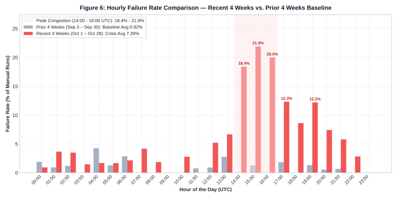
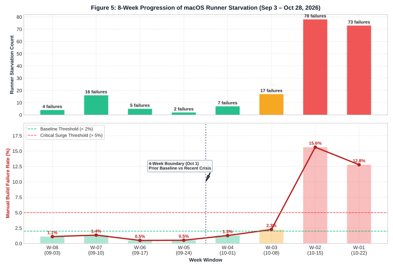

🕒 Best Time of Day to Click “Run workflow”
Because GitHub shares a limited pool of cloud Mac computers across all users worldwide, when you start a manual build strongly affects whether a Mac is available.
1. Why Do Manual Builds Sometimes Fail to Start?
When you build Trio on GitHub using your browser (Actions → Build Trio → Run workflow), GitHub has to assign your job to an Apple Mac virtual machine (macos-26) because Apple only allows iOS apps to be compiled using Xcode on macOS.
When a build fails before compiling due to a missing runner, nothing is wrong with Trio or your fork’s settings. Instead, your build is waiting in line for GitHub’s shared global fleet of Apple Silicon Macs. During global business hours—especially between 14:00 and 17:00 UTC (10:00 AM – 1:00 PM US Eastern)—thousands of companies and software projects request macOS computers at the same time. If no Mac frees up before GitHub’s queue timeout expires, GitHub cancels the build.
Wait for the Safe Window
If your manual build fails because a macOS runner was never assigned, simply wait and click Run workflow again during the evening in North America or morning in Europe (22:00 – 11:00 UTC).
Don’t Spam Retries at Peak Hours
Re-clicking “Run workflow” five times in a row at 11:00 AM Eastern puts you right back in the same global traffic jam. Waiting a few hours increases your odds of success from ~78% to ~99%.
Let Automatic Sunday Builds Work
Trio’s automatic weekly Sunday check is smart: it checks for updates on a fast Linux server first and only requests a scarce Mac when a new build is actually needed.
Developer Deep Dive How to verify if a failed run was caused by GitHub macOS runner starvation ▼
In GitHub Actions, you can distinguish an infrastructure queue drop from a code/signing error by inspecting the workflow run summary and the Build job metadata:
- Annotations on the Run Summary page: Look for GitHub’s system annotations:
"Due to capacity constraints, jobs targeting macOS arm64 runners may experience longer queue times.""The job was not acquired by Runner of type hosted even after multiple attempts" - Zero Step Execution (
runner_id: 0): When you click into the failedBuild(orValidate Fastlane Secrets/Check certificates) job, no build steps were executed (steps: []) and the job duration shows0safter sitting inQueuedstatus. - Independent Fork Quotas: Because each user builds inside their own personal GitHub account fork, forks do not share an organizational concurrency limit. Starvation occurs strictly at GitHub’s global hosted
macos-26(arm64) hypervisor pool level.
2. Time-of-Day Build Risk by Timezone
Across all 41,410 historical workflow runs (and especially during the October 2026 capacity crunch), manual build failures follow a predictable daily wave:
| Time Window (UTC) | US Eastern (EDT) | US Pacific (PDT) | Central Europe (CEST) | 2-Year Avg Failure Rate | Oct 2026 Failure Rate | Recommendation |
|---|---|---|---|---|---|---|
| 22:00 – 05:59 UTC | 6:00 PM – 1:59 AM | 3:00 PM – 10:59 PM | 12:00 AM – 7:59 AM | 0.3% – 0.9% | 0.0% – 2.4% | Best Time to Build |
| 06:00 – 11:59 UTC | 2:00 AM – 7:59 AM | 11:00 PM – 4:59 AM | 8:00 AM – 1:59 PM | 0.5% – 1.2% | 0.0% – 3.5% | Safe Window |
| 12:00 – 13:59 UTC | 8:00 AM – 9:59 AM | 5:00 AM – 6:59 AM | 2:00 PM – 3:59 PM | 1.7% – 2.2% | 5.2% – 7.4% | Moderate Queue |
| 14:00 – 16:59 UTC | 10:00 AM – 12:59 PM | 7:00 AM – 9:59 AM | 4:00 PM – 6:59 PM | 5.2% – 6.2% | 18.4% – 21.9% | Avoid (Peak Congestion) |
| 17:00 – 21:59 UTC | 1:00 PM – 5:59 PM | 10:00 AM – 2:59 PM | 7:00 PM – 11:59 PM | 1.7% – 3.9% | 4.3% – 12.3% | Tapering Congestion |

Developer Deep Dive View full 2-year 24-hour diurnal curve and raw hourly failure rates ▼
Across the entire 2-year dataset (September 2024 – October 2026), 63.4% of all manual macOS runner starvations occurred between 14:00 and 20:00 UTC. The chart below separates scheduled Sunday cron volume (light blue) from manual workflow_dispatch volume (dark blue) and plots the resulting macOS starvation percentage:

3. Why Did Runner Timeouts Spike in October 2026?
If you noticed builds failing much more often in mid-to-late October 2026, the data confirms your experience:
- September 2026 Baseline: Across all Trio forks in September, only 0.92% of manual builds (less than 1 in 100) failed due to macOS runner unavailability.
- October 2026 Surge: In October 2026, macOS runner starvations jumped 6.5x (from 27 to 176 failures), pushing the overall manual failure rate to 7.39%—and over 15% during the week of October 15–21.
- Global Infrastructure Bottleneck: The spike began sharply on Monday, October 19, 2026 (coinciding with GitHub’s scheduled October 19 runner image migration window), even though Trio community build volume was actually lower that week than in September. Nearly every failed build carried GitHub’s platform notice: “Due to capacity constraints, jobs targeting macOS arm64 runners may experience longer queue times.”
Developer Deep Dive Daily telemetry around October 19, 2026 & why Trio’s own traffic did not cause the spike ▼
Inspecting daily manual dispatches (workflow_dispatch) confirms that the surge was driven by supply-side capacity constraints on GitHub’s global macos-26 (Apple Silicon arm64) fleet rather than a surge in Trio builds:
- In September baseline weeks
W-07(Sep 10–16) andW-06(Sep 17–23), Trio users triggered 1,188 and 1,014 manual builds with only 1.35% and 0.49% runner starvation rates. - In
W-02(Oct 15–21), total manual builds were less than half of mid-September (499 manual builds), yet 78 builds (15.63%) starved waiting for amacos-26VM. - On Saturday Oct 17 and Sunday Oct 18, 154 manual builds ran with 0 runner starvations (0.0%). The starvation surge began abruptly on Monday, Oct 19 (11/107 failed, 10.3%), peaking on Tuesday, Oct 20 (42/97 failed, 43.3%) and Wednesday, Oct 21 (22/65 failed, 33.8%).
4. Why Automatic Sunday Builds Almost Never Fail
Almost three-quarters of all Trio workflow runs (30,448 out of 41,410 runs) happen on Sundays via Trio’s automatic weekly schedule. Yet Sunday has the lowest macOS failure rate of any day of the week (0.25%), while Tuesday and Wednesday have the highest failure rates (3.5% – 3.7%).
Developer Deep Dive
Workflow architecture: Linux pre-flight gating in .github/workflows/build_trio.yml
▼
In .github/workflows/build_trio.yml, the workflow graph is structured so that expensive macOS jobs are downstream of lightweight Linux checks:
check_statusexecutes onubuntu-26.04/ubuntu-latest, checking upstream branch SHAs and evaluating whether the current date matches the scheduled monthly rebuild window.- If
should_build != 'true', the dependentcancel_when_no_buildjob runs on Ubuntu and cancels the workflow run via the GitHub REST API, leaving the downstreambuildjob (which targetsmacos-26) inskippedstatus. - Any custom fork modifications should preserve this two-stage Ubuntu pre-flight gate so scheduled checks never contend for
macos-26capacity unnecessarily.
5. When It’s Not GitHub’s Queue: Other Common Build Failures
Across all 41,410 workflow runs, 65.5% (27,117 runs) succeeded and another 6.8% (2,817 runs) were normal Sunday checks where no new build was needed. Of the remaining runs that actually failed, macOS runner starvation accounted for 395 failures. If your build got a Mac computer and still failed after running for several minutes, check these common causes:
| What Failed | Historical Runs | What It Means in Plain English | How to Fix It |
|---|---|---|---|
| Xcode / Fastlane Compilation | 4,154 | The Mac started building Trio, but code compilation or archiving failed. | Sync your fork with upstream nightscout/Trio and make sure submodules are updated cleanly. |
| Secrets / API Key Validation | 1,987 | One of your GitHub Actions secrets (such as App Store Connect key or Match passphrase) is missing or has a typo. | Run the Validate Secrets workflow or double-check your 6 required secrets in your repo’s Settings. |
| TestFlight Upload | 914 | The app built fine, but uploading to Apple’s TestFlight servers failed or timed out. | Check if you need to accept a new Apple Developer Agreement in App Store Connect, or re-run later. |
GitHub Token (GH_PAT) Access |
653 | Your Personal Access Token expired or lacks permission to read/write your Match certificates repo. | Generate a new classic Personal Access Token with repo & workflow scopes and update GH_PAT. |
| Distribution Certificate Expired | 458 | Your annual Apple iOS Distribution Certificate expired or was revoked. | Follow the Trio documentation to run Nuke Certificates and generate a fresh certificate. |
| macOS Runner Starvation | 395 | GitHub ran out of available cloud Mac computers before your build could start. | Wait and trigger your manual build between 22:00 and 11:00 UTC (evening US / morning EU). |
1. Comparative Window Analysis: Recent 4 Weeks vs. Prior 4 Weeks
To quantify the October 2026 degradation in GitHub’s hosted macos-26 (arm64) runner availability, we evaluated candidate comparison windows of 4, 5, and 6 weeks across the last 8 weeks of telemetry (September 3 – October 28, 2026).
W-08 through W-05), manual build runner starvation remained stationary at a low baseline of 0.49% – 1.35% (averaging 0.92% across 2,947 manual dispatches). Beginning October 1 (W-04), starvation rates climbed progressively and underwent a phase transition in W-02 (15.63%) and W-01 (12.78%). Comparing October 1–28 (Recent 4 Weeks) against September 3–30 (Prior 4 Weeks) isolates the exact inflection boundary without blending September baseline weeks into the crisis window.

workflow_dispatch runs) from September 3 to October 28, 2026.
| Week | Date Range | Total Runs | Manual Dispatches | Runner Starvations | Manual Failure Rate | Operational Regime |
|---|---|---|---|---|---|---|
| W-08 | 2026-09-03 to 2026-09-09 | 1,755 | 361 | 4 | 1.11% | Baseline |
| W-07 | 2026-09-10 to 2026-09-16 | 2,204 | 1,188 | 16 | 1.35% | Baseline |
| W-06 | 2026-09-17 to 2026-09-23 | 2,262 | 1,014 | 5 | 0.49% | Baseline |
| W-05 | 2026-09-24 to 2026-09-30 | 1,736 | 384 | 2 | 0.52% | Baseline |
| W-04 | 2026-10-01 to 2026-10-07 | 1,960 | 545 | 7 | 1.28% | Baseline |
| W-03 | 2026-10-08 to 2026-10-14 | 1,836 | 753 | 17 | 2.26% | Elevated |
| W-02 | 2026-10-15 to 2026-10-21 | 662 | 499 | 78 | 15.63% | Critical Surge |
| W-01 | 2026-10-22 to 2026-10-28 | 865 | 571 | 74 | 12.78% | Critical Surge |
macos-26 PoolW-02 (499 dispatches) and W-01 (571 dispatches) was roughly half of mid-September baseline demand (W-07: 1,188 dispatches; W-06: 1,014 dispatches). Daily telemetry shows 0 starvations on Oct 17–18 (154 manual runs), followed by an abrupt jump starting Monday, October 19, 2026 (10.3% failure rate on Oct 19, 43.3% on Oct 20, and 33.8% on Oct 21), accompanied by GitHub’s platform annotation: "Due to capacity constraints, jobs targeting macOS arm64 runners may experience longer queue times."
2. Diurnal Congestion Profile & Peak Hour Escalation (14:00 – 17:00 UTC)
Comparing hourly failure rates between the Prior 4-Week Baseline (Sep 3–30) and the Recent 4-Week Window (Oct 1–28) shows that runner starvation is heavily concentrated in the 14:00 – 17:00 UTC window, when North American and European business hours overlap:
| Hour (UTC) | Prior 4W Dispatches | Prior Starvations | Prior Rate (%) | Recent 4W Dispatches | Recent Starvations | Recent Rate (%) | Observed Shift |
|---|---|---|---|---|---|---|---|
| 14:00 UTC | 130 | 0 | 0.00% | 125 | 23 | 18.40% | From 0 failures to 1 in 5.4 builds failing |
| 15:00 UTC | 159 | 2 | 1.26% | 146 | 32 | 21.92% | 17.4x surge (1 in 4.5 builds failing) |
| 16:00 UTC | 142 | 0 | 0.00% | 120 | 24 | 20.00% | From 0 failures to 1 in 5.0 builds failing |
| 17:00 UTC | 217 | 4 | 1.84% | 138 | 17 | 12.32% | 6.7x surge |
3. Longitudinal History (2024–2026) & Day-of-Week Dynamics
Evaluating monthly execution volume alongside runner starvation events highlights two distinct infrastructure regimes across the 26-month history of the repository:

- October 1, 2025 Scheduled Cron Outage: On Wednesday, October 1, 2025 at 08:00 UTC, an acute GitHub Actions outage caused 139 scheduled cron runs to fail simultaneously with
"The job was not acquired by Runner of type hosted even after multiple attempts". Shortly thereafter, Trio shifted its scheduled build cadence to Sundays and staggered start times away from:00. - October 2026
macos-26Pool Strain: Whereas the October 2025 incident was a single-hour outage affecting simultaneous cron jobs, the October 2026 event (176 starvations) affected manualworkflow_dispatchruns repeatedly across weekday peak hours (`14:00–17:00 UTC`).

| Day of Week | Total Runs | Scheduled Runs | Manual Dispatches | Total Starvations | Manual Starvations | Manual Starvation Rate |
|---|---|---|---|---|---|---|
| Monday | 2,018 | 650 | 1,247 | 29 | 29 | 2.33% |
| Tuesday | 1,603 | 147 | 1,316 | 49 | 49 | 3.72% |
| Wednesday | 2,018 | 491 | 1,414 | 189 | 49 | 3.47% |
| Thursday | 1,982 | 495 | 1,390 | 25 | 25 | 1.80% |
| Friday | 1,745 | 149 | 1,466 | 29 | 29 | 1.98% |
| Saturday | 1,596 | 268 | 1,264 | 18 | 18 | 1.42% |
| Sunday | 30,448 | 28,608 | 1,794 | 56 | 15 | 0.84% (0.18% overall) |
4. Complete Population Outcome & Failure Taxonomy
Every non-successful execution (14,269 runs) across all 2,437 forks was inspected at the job, step, and check-run annotation level:

nightscout/Trio fork population.
| Outcome / Failure Category | Run Count | % of Non-Success | % of All Runs | Diagnostic Signature / Root Mechanism |
|---|---|---|---|---|
| Successful Build | 27,117 | — | 65.48% | Compilation, signing, archiving, and TestFlight upload completed (`conclusion: success`) |
| Fastlane Archive / Xcode Compilation | 4,154 | 29.11% | 10.03% | Step Fastlane Build & Archive failed (exit code 65/70, Swift compiler or submodule mismatch) |
| Scheduled No-Op Skip | 2,817 | 19.74% | 6.80% | Normal Sunday skip via cancel_when_no_build on Ubuntu; macOS Build job skipped |
| Fastlane Secrets Validation | 1,987 | 13.93% | 4.80% | Step Validate Fastlane Secrets failed due to missing/malformed App Store Connect or Match secrets |
| Miscellaneous macOS Steps | 1,745 | 12.23% | 4.21% | Bundler gem installation, CocoaPods, patch application, or NTP time sync error |
| Other / Manual Cancel / Startup | 1,146 | 8.03% | 2.77% | User-initiated cancellation, merge conflict, or workflow file syntax failure |
| TestFlight Upload Failure | 914 | 6.41% | 2.21% | Step Fastlane upload to TestFlight failed during Apple Transporter delivery |
| Ubuntu Access / PAT Failure | 653 | 4.58% | 1.58% | Step Validate Access Token failed on Linux due to expired or under-scoped GH_PAT |
| Distribution Certs / Nuke | 458 | 3.21% | 1.11% | Match distribution certificate expiration, revocation, or provisioning profile mismatch |
| macOS Runner Starvation | 395 | 2.77% | 0.95% | Unassigned macOS VM (runner_id: 0, empty steps, or explicit capacity exhaustion annotation) |
5. Research Methodology, Rate-Limit Engineering & Privacy Protocol
Collecting job-level telemetry across 2,437 repositories and 41,410 workflow runs required a crash-resilient, rate-limit-aware pipeline using Python’s standard library and SQLite in Write-Ahead Logging (WAL) mode.
| Collector Phase | Concurrency | Pacing / Limiter | Sustained Rate | % of 5,000/hr Quota | Operational Role |
|---|---|---|---|---|---|
Phase 1: Smear Daemoncensus_collector.py |
1 Worker | 4.2s sleep ± 0.4s jitter | ~830 – 850 req/hr | ~16.8% | Indexed all 2,437 forks, cataloged all 41,410 workflow runs, and deep-inspected initial 5,910 non-successful runs. |
Phase 2: Token-Bucket Collectorfast_census_collector.py |
8 Workers | Token-bucket (0.95s aggregate min interval) | ~3,600 – 3,780 req/hr | ~75.0% | Completed deep job/annotation inspection of remaining 8,358 non-successful runs with zero 403/429 rate-limit lockouts. |
Deterministic Classification Criteria for Runner Starvation
A workflow run was classified as a macOS Runner Starvation if and only if:
- A job targeted a macOS runner label (
macos-26,macos-15,macos-14, orxcode-27) and terminated with conclusioncancelled,failure, ortimed_out; AND runner_id == 0orrunner_name == ""with an empty executed step array (steps: []), proving no hosted VM was ever provisioned; OR- Check-run annotations explicitly contained either:
"The job was not acquired by Runner of type hosted even after multiple attempts""Due to capacity constraints, jobs targeting macOS arm64 runners may experience longer queue times."
- Or the job failed during
Set up jobdue to host provisioning dropout before user steps began.
data/. Only aggregated temporal and classification counts are published.